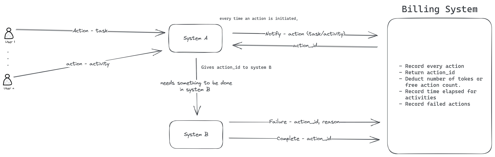

Activity Tracking for SAAS Billing: System design
SAAS billing as per user activity, for LooprAI platform - Refer: LooprAI (Jan31, 2023)
Background
When LooprAI started getting customers, we realized we had no way to track user activities for billing. The pricing was pay-as-you-go, and we weren't sure if we'd use invoices or credits.
I needed to design a flexible system that could handle both models and scale with the platform.
The Core Idea
Simple: track every action. Then decide whether to allow it, restrict it, or deduct credits.
Beyond billing, this gave us usage metrics. We could hook in Metabase for dashboards and show customers their usage patterns - helping them optimize costs too.
Design Goals
- Platform-agnostic: Any system can integrate via API
- Flexible pricing: Support unlimited tiers, actions, and pricing models
- Hybrid billing: Handle both subscription and credit-based models
- Time-based charges: Bill for instant tasks (API calls) and long-running activities (model training)
- Custom enterprise tiers: Sales can create custom pricing on the fly
Microservices Architecture
The billing system is a standalone microservice. Every other service calls it before executing actions. Here's how it works - when a user initiates an action, System A notifies billing. For activities that need System B to complete the work, System B notifies billing when done.

The Flow:
1. User initiates an action (task or activity) through System A
2. System A notifies Billing with action details. Billing returns an action_id and approves/rejects based on credits
3. If System A needs System B to do work, it passes the action_id to System B
4. System B completes (or fails) and notifies Billing with the action_id
5. Billing records everything: time elapsed for activities, tokens/free action count deducted, and failure reasons if any
This pattern handles both instant tasks (API calls) and long-running activities (model training). Billing tracks the complete lifecycle regardless of which system actually does the work.
The Data Model
Six core tables power the entire system:
1. Tiers
Defines subscription tiers (Free, Pro, Enterprise, etc.) with name, price, and currency. The buy_credits flag distinguishes monthly subscriptions from one-time credit purchases.
2. CreditBalances
Tracks credits per workspace. Credits can expire (with a timestamp) or last forever (000000 = epoch time).
3. Actions
Every platform action (train model, run inference, deploy, etc.) is defined here. Two types:
- "task" - Instant actions (API calls)
- "activity" - Time-based actions (model training)
4. ActionCosts
Maps tier_id + action_id to cost. The magic happens here:
- Tasks: flat cost per execution
- Activities:
activity_cost_every(milliseconds) defines billing intervals - e.g., "2 credits per 10 minutes" free_count: N free actions before charging, or-1for unlimited
This handles "500 free inferences/month", "unlimited training", or "pay per use" - all with the same model.
5. FreeActionBalances
Tracks remaining free action quotas per workspace. Once exhausted, credits get deducted.
6. PerformedActions
The audit log. Every action gets logged with: workspace, user, action, timestamps, duration, free/paid status, and outcome.
Used for billing, analytics, customer reports, and debugging.
Key Design Decisions
1. Task vs Activity - API calls get charged per execution, model training gets charged by time. Different actions, different billing.
2. Per-tier costs - Every tier has its own pricing for each action. Enterprise customers can have completely custom rates without touching code.
3. The free_count trick - Use -1 for unlimited, positive integers for quotas. One column handles "500 free API calls" and "unlimited training" equally.
4. Credit expiry - Promo credits can expire, purchased credits can last forever. One timestamp field handles both.
What I'd Do Differently
- Add support somehow for async billing - non blocking
- Pre-emptive activity rejection - estimate cost before starting activity and reject if user doesn't have enough credits
Lessons Learned
- Start with the data model. Get the tables right, everything else follows.
- Flexibility = good abstractions. The tier-action-cost relationship supported wildly different pricing without code changes.
- Design for observability. Usage metrics and customer reports weren't afterthoughts - they were part of the initial design.
- Keep it simple. Track actions, deduct credits. That's it.
If you're building usage-based billing, make it flexible enough to handle whatever sales and product throw at it. Because they will.